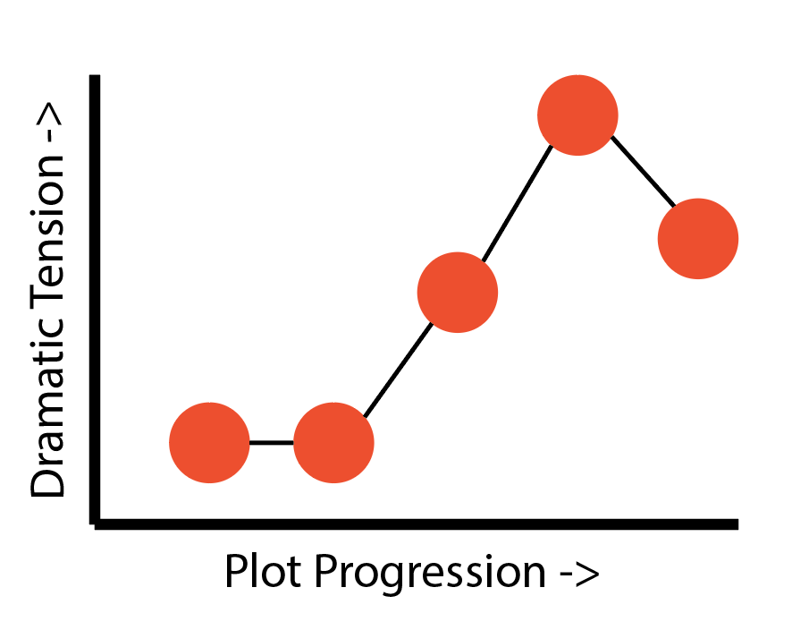
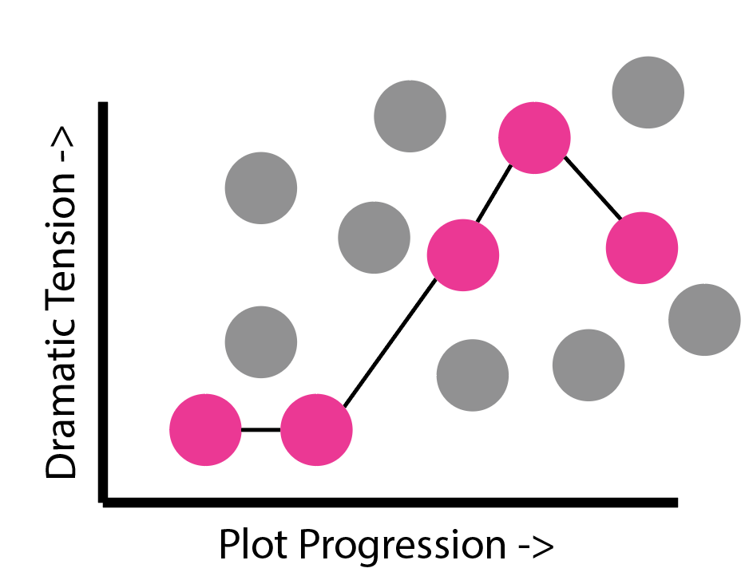
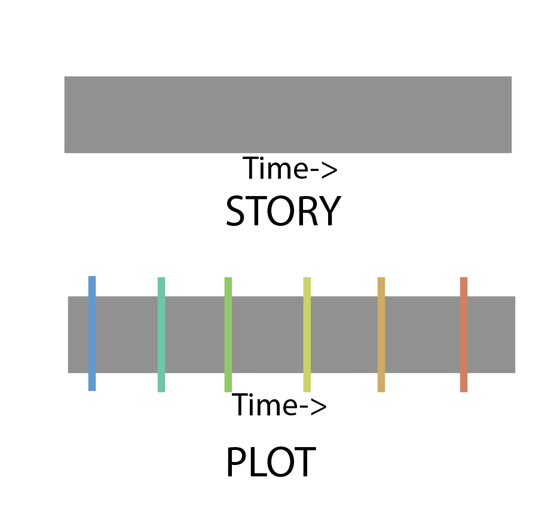
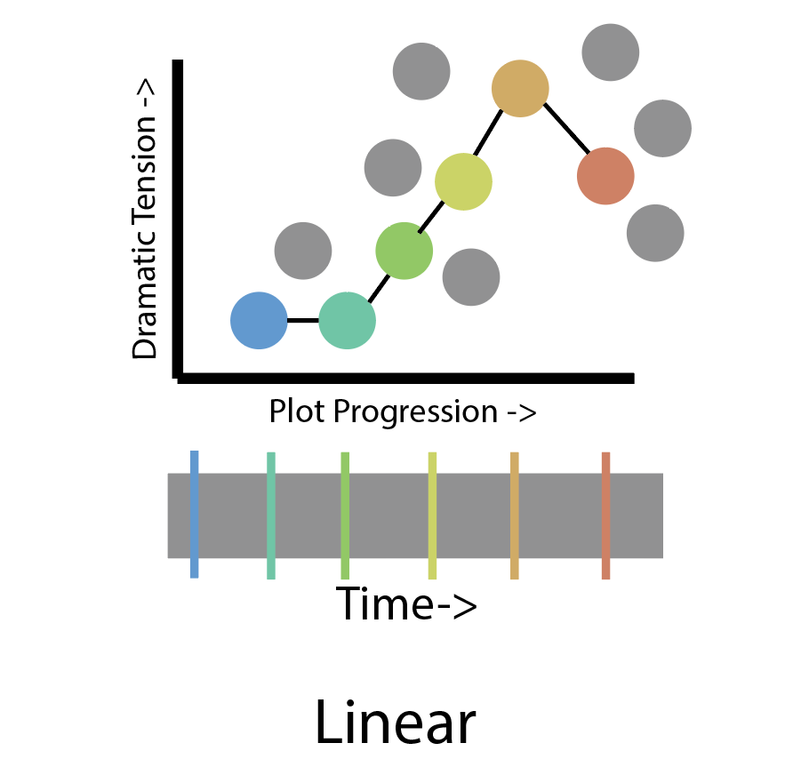
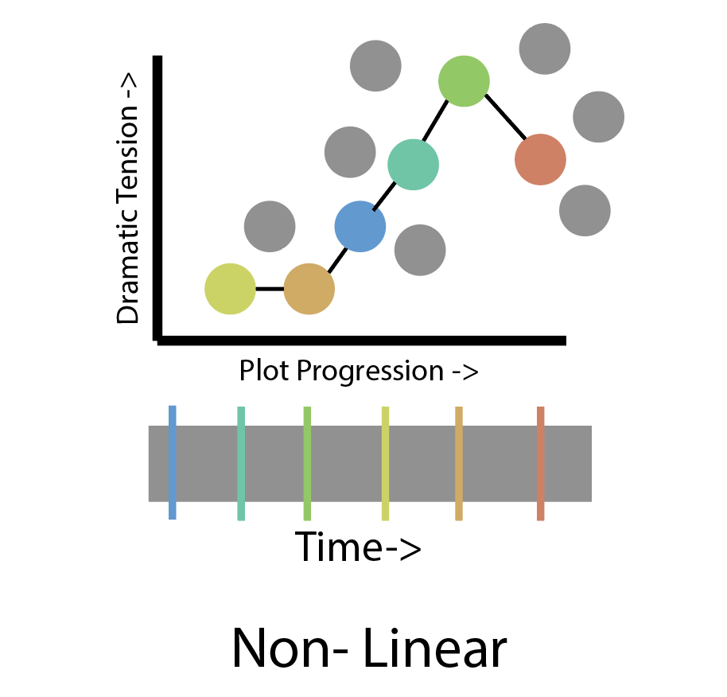
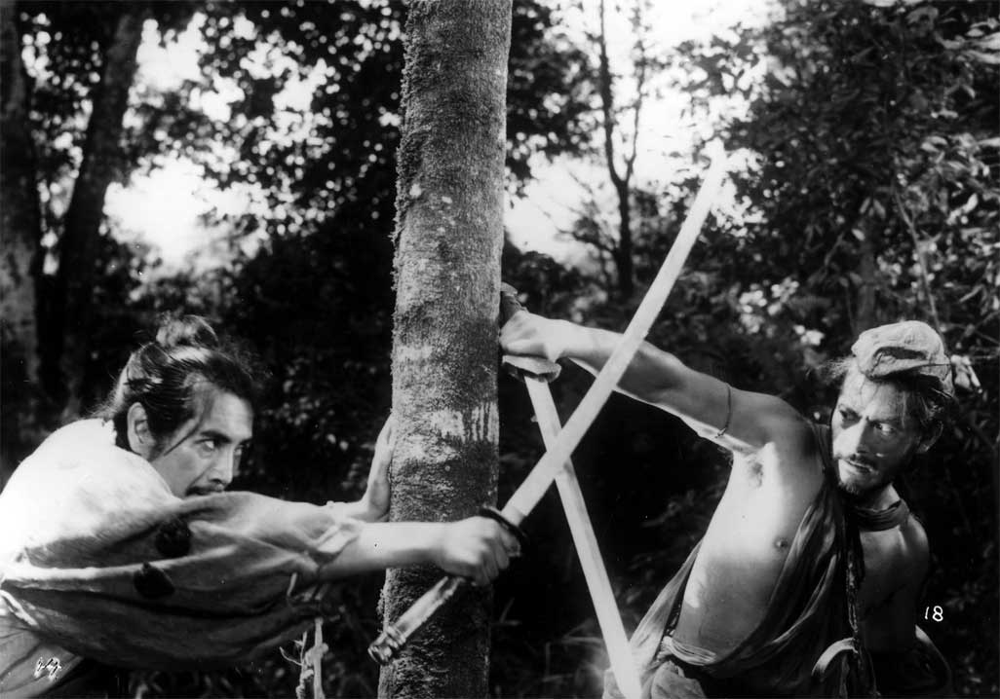

The challenge of writing/telling a good story is knowing how to choose among an almost innumerable number of options for constructing an effective narrative for a given story. This tutorial provides a collection of structural models that help to demystify the seemingly random arrangement of events in a narrative into an organized structure of measurable subunits and patterns.
To understand and compare different narrative strucutres, we must first consider how a narrative are the collective sum of smaller parts. The smallest building blocks of a narrative are known as BEATS. A dramatic beat is a change or response to an action or behavior. Let's take the opening scene from STAR WARS: THE FORCE AWAKENS. Watch the opening scene in its entirety:
First, let's talk about what is NOT a beat. The trooper battalion landing on a desert planet - NOT A BEAT. A spacecraft blows up - NOT A BEAT. A villager dies - NOT A BEAT. While there may be well over 25 story events or actions in this scene, there are approximately 7 beats in the opening scene total. Remember, a beat must express a change in the dramatic action. NOTE: the number of beats may vary depending on how they are expressed in terms of dramatic change, but the dramatic change must be expressed in EVERY change. Let's examine the first beat of the movie:
The First Order descening on the planet is an action. The village elder meeting with the pilot is also an action. The disruption or change of one event by another is a dramatic beat.
Here are all seven beats of the first scene:
A collection of beats makes up a SCENE. Like beats, scenes are defined by a change in dramatic action. The difference being that the significance of a change in a scene is greater than that of its individual scenes. Note the visualization below.
A collection of scenes makes up a sequence.
A collection of sequences makes up an Act
And there you have it! The basic substructures of narrative. Beats make up scenes, scenes make up sequences, sequences make up acts and acts make up a narrative.
Here we have the entire story of The Force Awakens represented as a three act narrative.
Each sequence of plot points can be arranged to produce a dramatic structure. Typically, the most common - and genearally most effective - dramatic structures take on the shape of a triangle. See below.
Most narratives begin in state of normalcy/stability and then gradually escalate in tension and instability until finally reaching climax and then dropping into a new state of normalcy and stability. This pattern of dramatic tension is completely dependent on the arrangement of narrative substructures. Storytellers will select a particular order of narrative strucutres to achieve a certain trend of dramatic tension. Theoretically, you could begin a plot sequence with the MOST dramatically tense narrative substructures, but it would be difficult to sustain the audience's attention for the duration of the story if the tension trickled off in susequent beats. There are an innumerable number of ways to arrange narrative substructures for varying trends of overall dramatic tension. As a storyteller, you're welcome to explore various structures, but note that convention holds that triangular dramatic strucutres are known to be the most common and effective.
Let's consider ALL the possible beats in Star Wars Universe during the time of this movie. All the other popular characters must be up to something while Finn and Rey trying to get off the desert planet Jakuu. Let's say Han Solo and Chewbacca are running into trouble capturing those Rathtars that appear later in the movie. That's a beat in the collective STORY SPACE of Star Wars universe. However, not all beats in a story space will be covered in the final plot - note that we never see how Han and Chewie captured the Rathtars, but it did happen in the story space. Instead, as a storyteller, we choose a subset of story events and beats to construct a narrative. The PLOT of the movie are the selected beats of the story space that are presented in the narrative. Typically, plots are composed of a particular sequence of beats and narrative substructures that achieve a particular pattern of dramatic tension.
The circles below are representive of all possible beats in a STORY SPACE. Click a subselection of them to specify plot points for a narrative.
The selected plot points can be arranged in a sequence that will produce a narrative of fluctuating dramatic tension.
A single story space can be traversed through different selections of plot points in a given narrative, resulting in retellings or reimagingings of a story space. For example, we can write a story from the perspective of a different character or cover an event that was only referenced by name in a previous iteration of the narrative. Remember, selecting alternative sequences of story substructures will impact the shape of the dramatic tensions as well!
Recall from Part 2 that we can select a sequence of plots points from a story space. Note the diagram below with the colored slices as our selected plot points in the story space.
In any given story space, there is - much like in real life - a linear progression of time through all possible plot points. The diagram belows shows our selected plot points following the same sequence that they appear in the story space. This is a LINEAR NARRATIVE.

However, linear narratives are not the only option for constructing sequences of plot points from a story space. We can, for example, construct a narrative with plot points that are "out of order" in the time of the story space. The plot belows shows an example of a NON-LINEAR NARRATIVE.
The Force Awakens and the vast majority of stories use a linear narrative(Although there is short dream/flashback sequence in The Force Awakens that one could argue is a non linear segment). Non-linear narratives contain flashbacks or flashforwards such as SLUMDOG MILLIONAIRE. Or a non-linear narrative may revist the same time in the story space but from the perspective of a different character each time(See the Japaneese classic RASHOMON).
